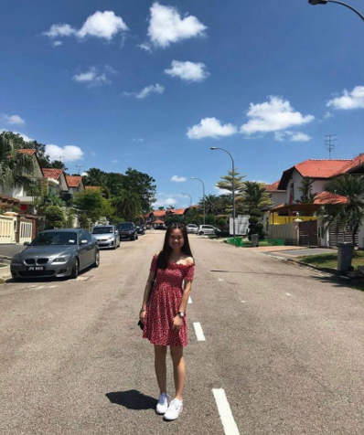

Homepage
This website documents my exploration of web & digital fabrication technologies. In this module, I would be taught how to use some software such as brackets and Fusion 360.
I am excited to discover more on digital fabrication and prototyping. It will be a fruitful journey for me to learn new things that were not taught in my course. I am looking forward to share my final project as I am able to utilize all the skills and knowledge that I will learnt in this semester
About Me
Hello, I am Mei Jia from Diploma in Civil Engineering with Business. I am a year 3 student and it is my last semester in poly. I love to watch movies and taking photographs of beautiful places. I enjoy eating and learning new things. I love to learn interesting and new things which is why I chose this elective. I am really excited and look forward to learn more on digitial fabrication to enhance myself.
